Hi, I'm Shannon Hecker, a product designer in London. Lead design for FX and MarketsOne at Barclays, VP of Product Design at J.P. Morgan before that. I build what I design.
I design toolswhere mistakescost money.
Three cases, one method
Every case runs the same six beats. Problem, constraints, decisions and their trade-offs, the full flow, the edge states, the outcome.
Case one · Barclays · 2025 to now
FX execution analytics
A trader works a large FX order over hours and keeps deciding whether to step in or leave it. The desk did that across a static chart, five spreadsheets and a separate execution tool.
Keep the trader in one place, and cut the time from seeing a price move to acting on it.
- Users
The sales and trading desk, and the institutional clients executing through the same platform with different entitlements.
- Where we started
One static Execution Over Time chart from the desk. Five spreadsheets covering trades, market data per order, price limit logs and reference prices. A twelve-item wishlist. No design, no interaction model, no visual language.
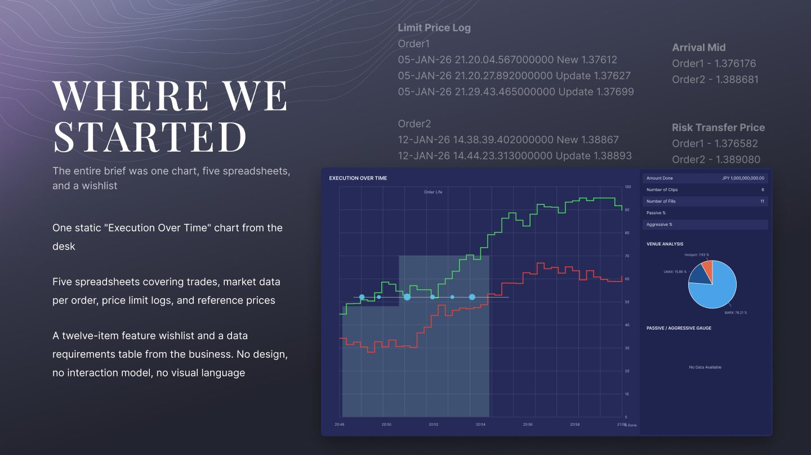
In beta with internal users at Barclays. Under NDA, so every screen here is my public rebuild with sample data, built from the production spec.
A trader who acts, a desk head who defends, and a quant who tunes.
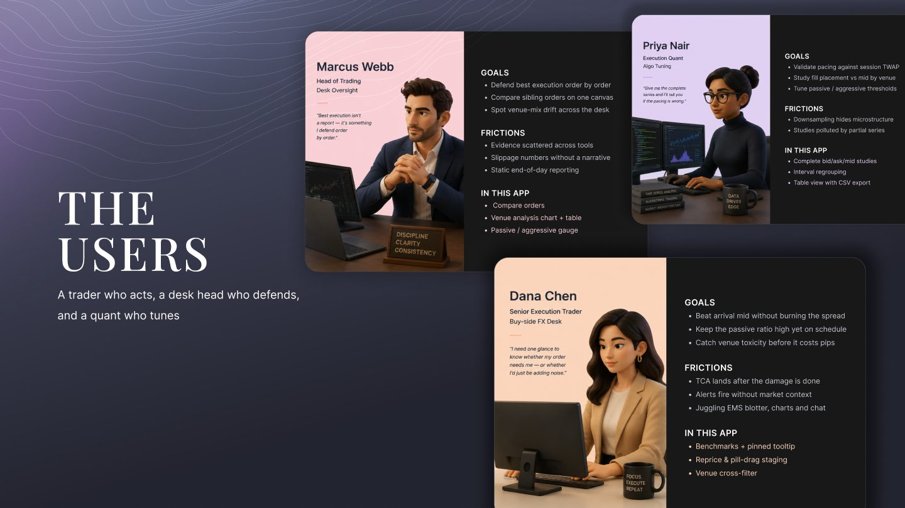
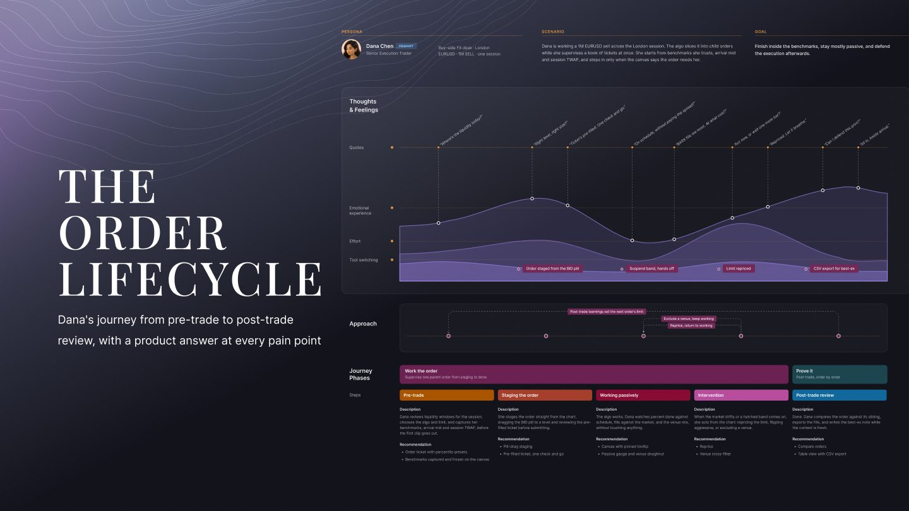
- Professionals whose job is the tool
A trader will tolerate density because power is worth the learning curve. So the problem is hierarchy under pressure, not simplification.
- Five spreadsheets, read line by line
Fills, market data, limit price changes, arrival price, risk transfer price. I grouped them into four kinds of data and that grouping became the layers of the chart. Every mark maps to a data type. Nothing is decorative.
- The limit price log was the clue
Orders were being changed mid-flight, several times each. So repricing is a core action, not an edge case, and it had to live on the chart.
- Watching people decide
I sat with a few clients to watch how they decide to trade now or wait. The question is always the same. Am I ahead of the market or behind it. That's the first thing the screen answers.
Four things shaped every decision. None of them were mine to remove.
- One platform, two audiences, old technology
Internal traders and external clients on the same system with different entitlements. One design had to serve both without a second codebase.
- A charting vendor's engine
Some ideas were possible, some weren't, and some were possible but wrong. The vendor's limits became inputs, not blockers.
- Compliance in the flow
Every action that changes an order needs a confirmation step and an audit trail. Safety could not mean leaving the chart.
- The foundation was broken, so I fixed it first
The brief was to tidy the light theme. I read the code, the tokens and the naming and found hardcoded colours throughout, so one fix would break the next. I gave the product owner and engineering two options with costs. We shipped the feature work first, then phased the fix in the background, starting with the blotter because it was simple and single-themed.
Watch, assess, step in. Every branch lands on a screen.
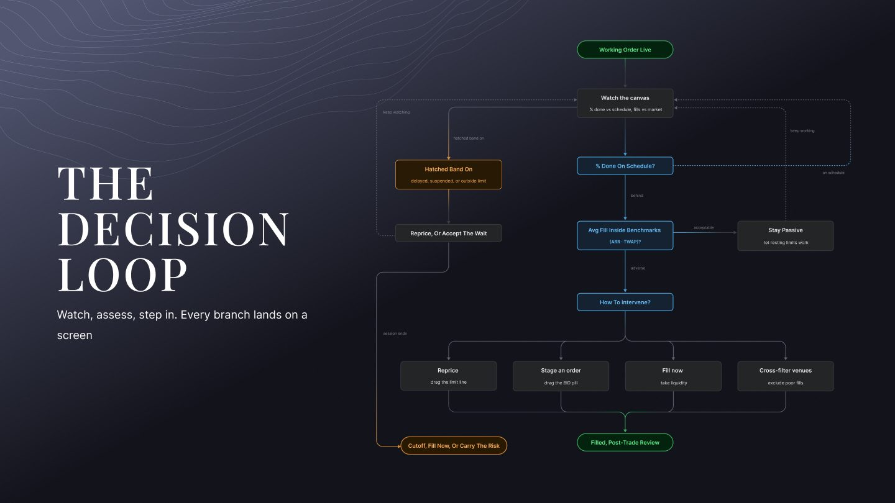
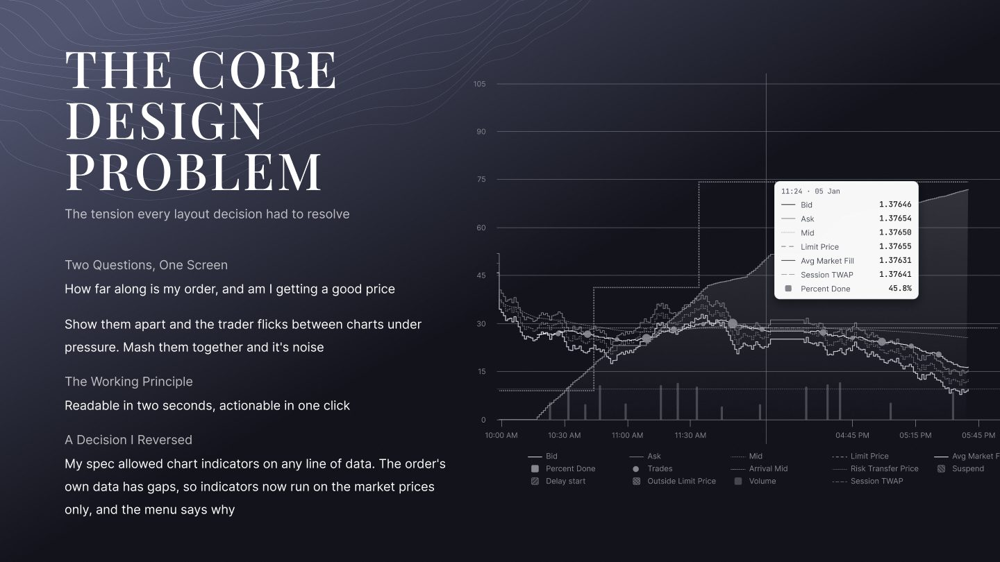
Two questions, one screen. How far along is my order, and am I getting a good price. Show them apart and the trader flicks between charts under pressure. Mash them together and it's noise. The working principle: readable in two seconds, actionable in one click.
Three calls that defined the product. Each one had a real alternative.
- 01
Progress and price on one canvas, not two panels
We explored two linked panels and one combined chart. Two panels were cleaner to build, but traders flicked between them under pressure and missed the moment.
One canvas with a dual axis won, at the cost of a denser screen that needed careful hierarchy.
- 02
Reprice on the chart, not in a settings menu
The limit price log showed orders being changed mid-flight. We tested a menu-based edit against drag-to-reprice on the price line.
Drag won because the decision and the action sit in the same place, with a pre-filled ticket as the safety step.
- 03
Studies on market prices only. A decision I reversed
My spec let analytics studies run on any series, including the order's own fills. The vendor showed that order data has gaps, so a study on it looks confident and is wrong.
I reversed it. Studies run on bid, ask and mid only, and the picker says why. Flexibility that produces plausible but wrong output isn't a feature.
From monitoring to action, without leaving the chart.
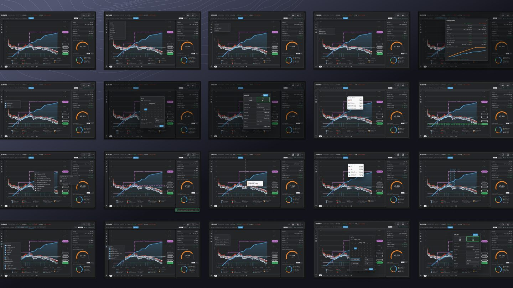
Hover a fill to see the detail. Right-click to act. Drag a price line to reprice, and it opens a filled-in order ticket. Each step commits you a little more, so you can't reprice by accident. We turned a chart you watch into a chart you can trade from.
- Built in six phases
Theming and data integration first, then display, then interaction, and order submission last. Each phase reduced the risk of the next, and the desk got something usable early.
- Too much on the axis, by design, for now
Phase one puts every attribute on screen on purpose, so the desk can tell us what matters instead of us guessing. Phase two adds entitlement-based templates per user type and a preference panel to hide attributes. Start wide, then narrow with evidence.
- Two version-one debts I paid in the rebuild
Patterned state regions tiled the canvas, so the exceptional read as normal. States now sit in a lane under the time axis. And volume-sized fill dots were honest at twenty clips and a smear at three hundred. Fills now group into counted clusters that expand on zoom.
- A compare view, because quality is relative
Execution quality only means something against a benchmark or another order, so I put a patient working order beside an urgent completed one, with the benchmark metrics in one table.
The states a trader hits when things are not normal.
- Order can't trade
Suspended, delayed start and outside limit each get their own lane under the time axis, so the price field stays quiet and the state is readable at a glance.
- Colour never carries meaning alone
Every series has its own shape and dash as well as a colour. Favourable and adverse values say so in words, not just in green and red.
- Repricing by accident
Drag opens a pre-filled ticket. Nothing changes until it's confirmed.
- No data yet, light or dark, hundreds of fills
Empty and loading states for a new order. Both themes, because traders run dark rooms and sales run bright ones. Clusters at scale.
Where it is today, and how it will be measured.
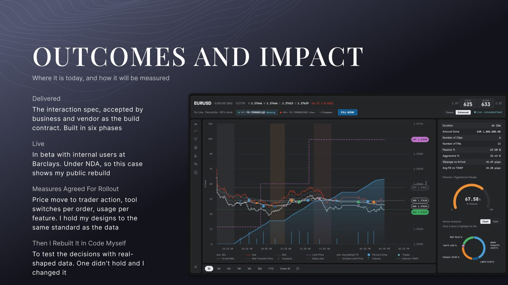
No adoption numbers are claimed before rollout. I hold my designs to the same standard as the data. What I'd do differently: direct trader access earlier, instead of going through the business first. And the vendor's engine limits discovered in week one, not mid-spec.
Case two · J.P. Morgan · 2023 to 2025 · shipped
Fusion analytics dashboard
Portfolio managers and analysts were drowning in fragmented data. Their real need was trust in the numbers, not more features. Performance, attribution and risk they could take into a board meeting.
- Salt, the firm's design system
Every component had to come from Salt or go back into it. I built the Fusion layer on top and contributed back. My craft shows in layout, hierarchy and data density, not in new components.
- FactSet's engine behind the data
The analytics came from a partner engine, so the shape of the data was fixed. Design had to fit what the engine could return, fast.
- Accessibility as a gate, not a finish
An accessibility specialist sat in every review. Anything that failed went back before it reached engineering.
- Two constraints that pulled against each other
Dense data and decision speed. I named them both, then built the conflict into the design. Type, hierarchy and colour were set for the worst-case viewing moment, someone presenting live under pressure.
One analyst, from a raw data cube to a board-ready page.
A data cube
FactSet feeding it.
Slice it
Advanced filtering, toggles, deep slicing.
Returns, attribution, risk
Across asset classes.
Board-ready
Without leaving the surface.
- Sketch, wireframe, high fidelity
Each flow went through paper, then wireframes, then built screens on Salt. The sketches set the information hierarchy before any visual decision.
- The review cycle
Requirements with the product owner, iteration with UX, review with product, engineering and the accessibility specialist, then pixel-level work with developers in daily stand-ups.
What I tried, what I dropped, and why.
- 01
Modular widgets over fixed page templates
Fixed layouts were faster to ship, but every new data cube would have needed a new page.
The grid won because one widget serves many cubes and permission levels.
- 02
Cut a customisation tier
Early versions had three levels of configuration. Testing showed the middle tier added cognitive load without changing what people built.
I removed it. The test I use for what not to design: is this serving a real workflow contradiction, or one team's preference?
- 03
Same screens for internal and external users
Phase two brought in clients who'd had no training.
One product with entitlement-based views over a simplified client version, so patterns stayed consistent and the team kept one codebase.
- 04
What I'd do differently
Get in front of end users directly and earlier. The start leaned on product-owner requirements. Ship a leaner version one with fewer modules.
And bring the accessibility specialist in from week one, not mid-flow.
Configurable pages built from modular widgets, on a layer I made on top of Salt.
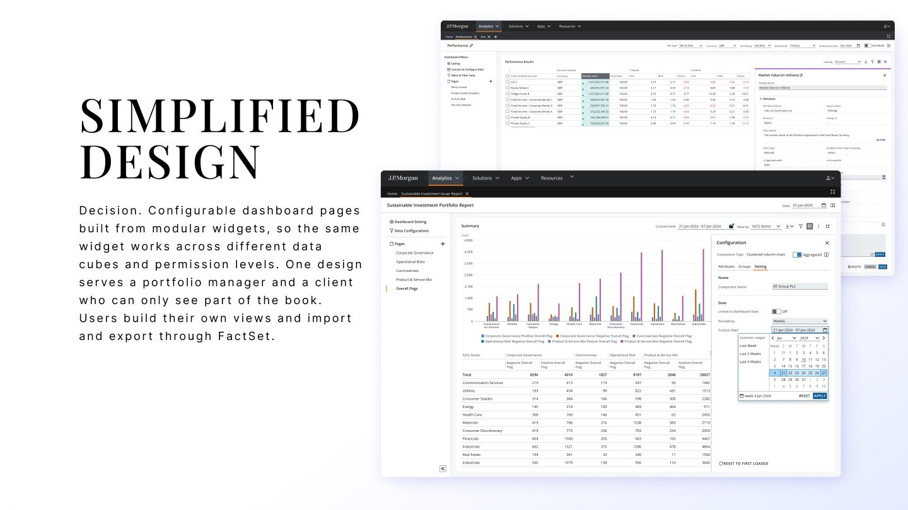
- One widget, many cubes
The same widget works across different data cubes and permission levels. One design serves a portfolio manager and a client who can only see part of the book. Users build their own views and import and export through FactSet.
- What I built
Tokens, components and patterns for Fusion on top of Salt. Data tables, chart frames, filter bars, widget shells, the accessibility layers. Where Salt had a gap, I built it and contributed it back upstream.
- Why a layer, not a fork
A fork would have drifted from the firm's standard within a year. A layer meant every Fusion screen stayed on the platform standard and the platform got better from our work.
- How it was adopted
Other Fusion product teams built their journeys on the same components, which is how the analytics patterns spread across modules without me in every room.
Shipped, adopted, and opened to clients.
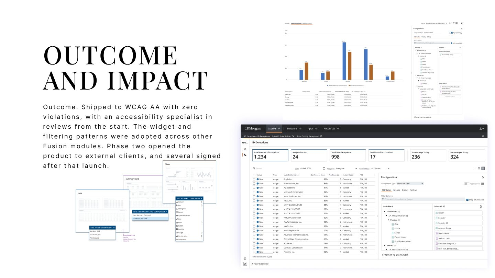
Case three · Solo · live on the App Store
Winking Star
A warm, ad-free routine app for families. Every check earns a star, and every week those stars grow a Mystery Pet. I designed and built it on my own, so the visual decisions, the copy and the code are all mine.
Tiny routines, happy families
Kids check off their day. Stars hatch a pet that grows through four stages as the week fills up. On Monday a new pet arrives, so there is always something to look forward to.
Bedtime in our house was a nag loop. Every chore chart we tried was built for adults.
- Problem
Teeth, bath, reading, Mandarin practice, out of the door for a walk. Two children, two adults, and no shared view of what was done. The kids stopped looking at every chart within a week.
- Research
Built for my own two kids first and watched them use it every evening. I read what works for five to seven year olds: big icons, sticker mechanics, bright colour and celebration moments beat any checklist. Naming research too. Sparkle and Twinkle were taken, so it became Winking Star.
- Goal and success measure
A child who asks to tick their own stars, and a parent who opens it the next evening without being reminded. Routines completed per week, weeks retained, and whether a second adult joins the board.
- Constraints
Solo, evenings and weekends. Free to start with a one-off lifetime unlock, no ads and no subscription, because it's for children. Kids Category rules on the App Store shaped the parental gate and the privacy manifest.
Three users, one star. Nobody has the same job.
Can't read much yet. Knows his own name, his colour and his football.
WantsTo tick it himself, see the star land, and find out what the pet turns into.
Breaks whenA word he can't read is in the way. A tap target is small. A missed day makes the week feel lost.
Design answerA big illustrated banner per theme, celebration on every tick, and a weekly pet so one bad day doesn't end the game.
Downloads it after another bedtime argument. Decides in two minutes if it stays.
WantsRoutines done without nagging. One place both adults can see. Nothing that sells to her kids.
Breaks whenSetup takes more than a minute. An ad appears. The app hands the phone to the child with no guard rails.
Design answerA sample family on first open, so value shows before any setup. Kid Mode and a parental gate. Custom activities, so Mandarin sits next to teeth.
Partner, grandparent, childminder. Got an invite on WhatsApp. Has thirty seconds.
WantsTo tick a star and get back to bedtime.
Breaks whenAny learning. A board that looks different from the one the kids know.
Design answerInvite to the same board, same screen, same stars, from their own phone.
Four tabs, one week. Home, Activity, Treasure, Progress.
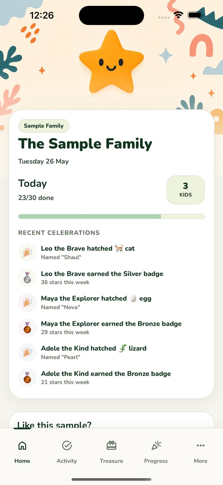
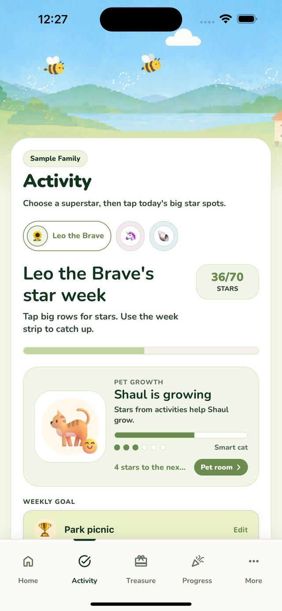
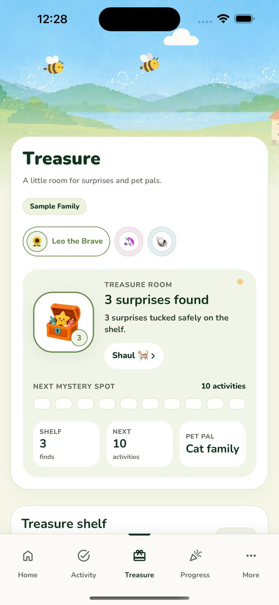
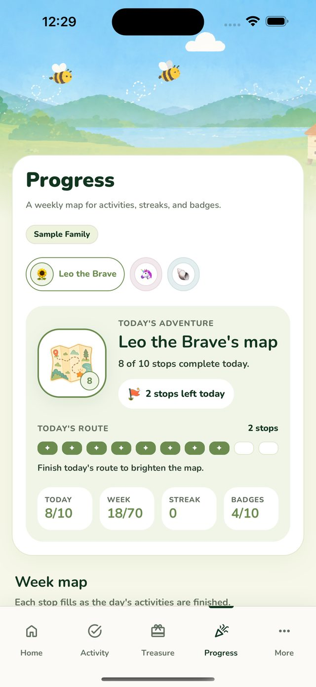
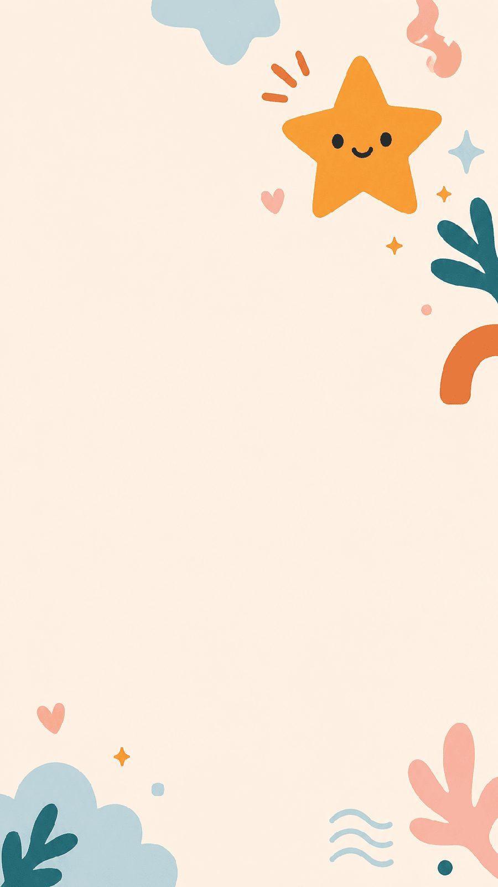
Captures from the live app, v1.0.4, on iPhone 15 Pro Max. Sample family data.
From a bad bedtime to week two.
The parent's journey, with the child's feeling underneath, the moment it breaks, and what the design does about it. Scroll sideways on a phone.
1 · Another bad bedtime
Parent doesSearches for a chore chart app. Most are checklists, subscriptions or ads.
Child feelsFed up.
Where it breaksNothing is made for a six-year-old.
Design answerAd-free, kid-first on the store page.
2 · First open
Parent doesOpens the app and finds the Sample Family already set up.
Child feelsCurious.
Where it breaksAsked to set up before seeing value.
Design answerA working sample board first. Add your own family when you like it.
3 · First tick
Parent doesHands the phone over. The child taps teeth. A star lands and confetti fires.
Child feelsDelighted.
Where it breaksThe child can't read the label, or taps Settings.
Design answerIcon per activity, big targets, Kid Mode locks editing.
4 · End of day
Parent doesChecks Home. The pet grew a stage. A treasure dropped.
Child feelsProud, or a bit flat.
Where it breaksA missed routine feels like failure.
Design answerStars count up. The pet grows on what was done, not what was missed.
5 · End of week
Parent doesPrints the weekly summary for the fridge. Monday, a new pet arrives.
Child feelsExcited.
Where it breaksIf Monday is dull, week two never happens.
Design answerA new egg every Monday, and the old pet joins the Pet Pals collection.
6 · Second adult joins
Parent doesInvites grandma to the board. She opens it and ticks a bath.
Child feelsRelieved, and a bit smug.
Where it breaksA second board, a second set of rules.
Design answerOne shared board. Same screen on every phone.
Two loops and six decisions.
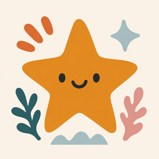
Try it · Leo, Tuesday0 of 6 starsThe pet grows through four stages as the week fills. In the app that takes seven days. Here you can tick all six and watch it now.
- 01
Stars and a pet, not a checklist
Explored a plain tick list. Research on five to seven year olds said big icons, stickers and celebration win. The checklist lost in our own house within a week.
- 02
A weekly pet with four stages, not a daily score
Daily stars count up and never down. The pet grows across the week on what was done, so one missed bath doesn't end the week, and Monday always brings a new egg.
- 03
A sample family before any setup
Explored a tour and an empty state. Both asked parents to invest before they'd seen the loop. The Sample Family shows a full week on first open, and you replace it when you're ready.
- 04
A theme per child, drawn not templated
Explored one look for all. Kids find their own card by colour and picture before they can read. Fourteen illustrated banners, from Football and Dinosaur to Ocean, Unicorn and Robot, plus a photo avatar if they want their own face on it.
- 05
A parental gate, not a locked app
Explored a PIN. Parents forget PINs and kids watch them type. A quick maths question gates anything that leaves the app, uploads a photo or deletes an account, and Kid Mode locks editing so the phone can be handed over mid-routine.
- 06
Lifetime unlock, not a subscription
Explored a small subscription. Dropped it. It's for children, and trust is the product. Free to start, one payment if you want everything, no ads, no third-party tracking.
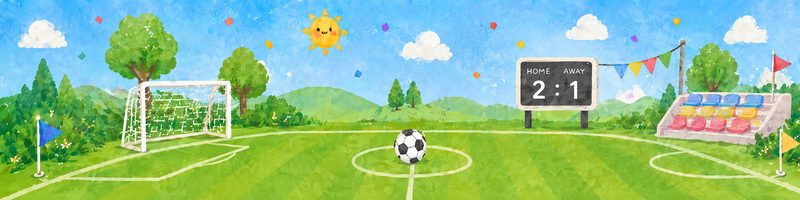
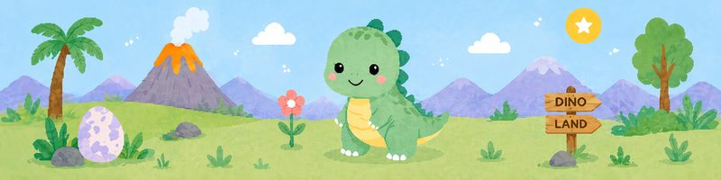
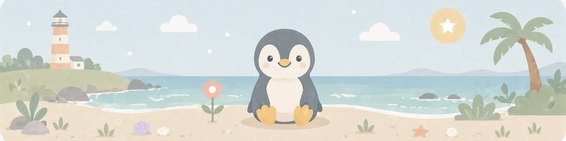
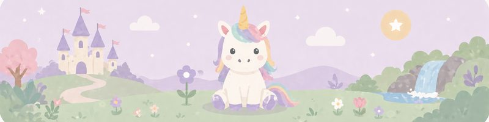
Four of the fourteen theme banners. Each kid's card, activity row and pet carry their theme.
The states most people never see.
- First run, no family yet
The Sample Family is the empty state. Add your own kids when the loop makes sense, and the sample goes away.
- A missed routine, or a missed day
Stars never go negative and nothing turns red. The day just has fewer stars. The pet still grows on what was done.
- Midnight
The day rolls over at local midnight even with the app open, so a late tick lands on the right day. That one shipped as a fix in 1.0.4.
- Offline in the bathroom
An offline banner, ticks queued, synced on reconnect. Two adults can tick the same kid from two phones.
- Split homes and birthdays
A custody label, "at Mum's this week", so the board reads right in both houses. A birthday banner for the whole birthday week.
- Accessibility
VoiceOver on every tab, Dynamic Type with a scaling cap so nothing clips, Reduce Motion respected, and Calm Mode turns confetti off for families who want quieter feedback. Colour never marks state alone.
Live, in five languages, and in daily use in my own house first.
- What shipped after launch
Four releases so far. Privacy and safety work for the Kids Category, smoother weekly stars and treasures, the midnight rollover fix, VoiceOver improvements, faster startup, and rating from Settings.
- What I'd change next
The pet card still truncates its helper text at the smallest sizes, and the pet family labels aren't translated yet. Both are on the list, found in my own usability pass.
Private alpha · practice, not a shipped product
uoaui.ai
A design platform I'm building on Claude. It turns a prompt into a working screen built from real design systems, Salt, Material, Fluent and Carbon among them, with their official React components. Switch system, density or theme and the screen rebuilds.
- Designing for output you can't predict
Where the system acts and where it asks. How a person stays in control without making the AI useless. The compare and tune steps are my answer so far. The model drafts, I decide.
- Who it's for, and the trap
Designers like me, which is dangerous, because designing for yourself hides your blind spots. The alpha exists partly to break my own assumptions.
Prompt to production screen.
Screens to add One run through the builder, captured from the alpha.
- 01
Official components only, never overridden
We explored letting the model draw free-form UI and restricting it to each system's published React components. Free-form looked impressive and was unusable.
Official-only won. The output is something a developer recognises, at the cost of the model having fewer moves.
- 02
Five systems, one model underneath
I mapped their tokens, density scales and theming into one structure so a screen can switch system without being rebuilt by hand.
Where the systems disagree, I chose the strictest definition each time.
- 03
Compare and tune before export
The model's first answer is a draft. The flow forces a compare step across systems and a tune step on the screen before anything exports.
That's where the person decides, and where I correct the model most often.
Where Figma still matters, and where a designer still does.
- Figma for foundations
The better the design file, the better the AI output. At Barclays I'm matching Figma naming to the code so there's no gap in either direction. When the model can't get the spacing right, I point it at the file. Everything after that, I'd rather iterate in code.
- Built from the terminal
Both public rebuilds in this portfolio were made with Claude Code and Codex, in days, to test decisions with real-shaped data. Winking Star shipped the same way.
- Where a designer still matters
A colleague brought me a screen made with AI. It looked fine, used none of our components, and nobody had tested it with a user. I rebuilt it in our system, showed both, and we could ship in two weeks instead of months. A generated screen still needs someone who watched how people work.
How I work
The habits behind the three cases.
Start from the job, not the screen
Every brief arrives as a screen request. I go back one step to the job it sits in. When a brief feels small but the problem feels structural, the job is to widen the conversation.
Get to users, whatever is in the way
Twelve months with an ops desk. A year embedded with four teams. Paper tests with analysts. Clients watched deciding. My own kids at bedtime.
Three options, then narrow
I bring three or four directions, mapped fast. People rarely know what they want until it's in front of them, and every no tells me where to go.
Decide what not to design
Is this serving a real workflow contradiction, or one team's preference? If we're adding because we have a hypothesis, fine. If we're adding to feel productive, cut it.
Build it to test it
If I can't prove a decision in Figma, I build it. The reversed decision in the FX case came from code, not a picture.
Accessibility is a gate
Zero violations on Fusion. VoiceOver, Dynamic Type and Calm Mode in Winking Star. Shape and dash beside colour on every FX series.